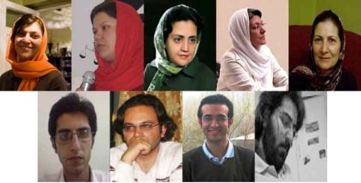

|
|

پی گیری خانواده ها برای آزادی بازداشت شدگان شش فروردین بی نتیجه ماند
شنبه8 فروردین 1388
تغییر برای برابری: به رغم وعده های داده شده برای آزادی 12 تن از اعضای کمپین یک میلیون امضا و مادران صلح، بازداشت آنان همچنان ادامه دارد و مردان کمپینی از صبح امروز به زندان قزل حصار منتقل شده اند.
خدیجه مقدم، لیلا نظری، دلارام علی، فرخنده احتسابیان، محبوبه کرمی، شهلا فروزانفر، ثریا یوسفی، آرش نصیری اقبالی، امیر رشیدی، محمد شوراب وعلی عبدی، عصر روز پنج شنبه در حالی که تصمیم داشتند به دیدار نوروزی با خانواده های برخی از زندانیان بروند در خیابان سهروردی تهران دستگیر و به زندان منتقل شده و بازداشت آنان تا کنون ادامه یافته است.

صبح امروز در سومین روز بازداشت دوازده تن از اعضای کمپین یک میلیون امضا و مادران صلح، خانواده های آنان برای پیگیری و اطلاع از وضعیت آنان به دادیاری ویژه امنیت واقع در جنب زندان اوین و سپس به دادگاه انقلاب مراجعه کردند.
طی ساعت های متمادی حضور خانواده ها و افرادی که به عنوان کفیل برای آزادی بازداشت شدگان به دادگاه انقلاب مراجعه کرده بودند، پس از بلاتکلیفی و پاسخ های ضد و نقیضی که تا پایان وقت اداری به آنان داده شد، هیچ یک از این افراد آزاد نشدند.
بازداشت اعضای کمپین و مادران صلح در حالی ادامه یافته است که به گفته ی خانواده های آنان، صبح امروز آقای یوسفی رئیس دفتر قاضی متین راسخ به آنها اعلام کرده بود عصر روز پنج شنبه برای کلیه بازداشت شدگان قرار کفالت صادر شده بود ولی به دلیل عدم اطلاع خانواده ها مراحل اداری آن به اولین روز کاری یعنی روز شنبه موکول شد. اما هنگامی که خانواده ها امروز با کفیل به دادگاه مراجعه کردند پاسخ مشخصی دریافت نکردند تا اینکه در نهایت به آنها اعلام شد که پیش از شانزدهم فروردین به هیچ کدام از پرونده ها رسیدگی نخواهد شد. مسئولان دادگاه انقلاب در مواجهه با اعتراض به این امر از قول بازپرس های شعبه امنیت، آقایان راسخ و حیدری فرد نقل کردند که به دلیل تجمع خانواده ها در مقابل دادگاه انقلاب مراحل آزادی آنها به تعویق افتاده است.
سایر اعضای کمپین و مادران صلح که در بند مالی زندان زنان اوین نگهداری می شوند طی تماس با خانواده های خود اعلام کرده اند که با نوشتن نامه ای به رئیس زندان به ادامه بازداشت به رغم صدور کفالت معترض شده اند اما مددکار و رئیس بند نسوان از قبول نامه سر باز زده و گفته اند که اعتراضات آنان را به صورت شفاهی منتقل می کنند. این افراد همچنین اعتراض کرده اند که چطور برای بازداشت آنان در روز تعطیل و تا پاسی از شب گذشته، قاضی کشیک حضور دارد اما برای رسیدگی به پرونده و آزادی شان در ساعات اداری قاضی کشیک حضور ندارد.
قرار است که صبح فردا خانواده ها مجددا به همراه کفیل به برای پی گیری آزادی فرزندان شان به دادیاری امنیت دادگاه انقلاب مراجعه کنند.
در دیگر رسانه ها:
انتقال 4 تن از بازداشت شدگان کمپین یک میلیون امضا به زندان قزل حصار /کمیته گزارشگران حقوق بشر
نسرین ستوده: قرار دستجمعی برای عیددیدنی، مخل نظم عمومی نیست /دوچه ووله
بازداشت 12 نفر از فعالان دانشجویی و حقوق زنان /شهرزاد نیوز
میهمانی در اوین! /مدرسه فمنیستی
بازداشت چند فعال حقوق زنان در تهران/ بی بی سی
بازداشت شماری از اعضای کمپین یک میلیون امضا/رادیو فردا
بازداشت جمعی از اعضا کمپین یک میلیون امضا/رادیو زمانه
بازداشت خودسرانه فعالان حقوق زن و ممانعت از بازديد نوروزی آن ها، کمپين بين المللی حقوق بشر در ايران
بیش از ده نفر از اعضای کمپین یک میلیون امضا و مادران صلح بازداشت شدند/شبکه همبستگی زنان
بازداشت خودسرانه فعالان حقوق زن/ ایران امروز
انتقال فعالان دانشجویی و زنان کمپین یک میلیون امضا به زندان اوین/خبرنامه امیرکبیر
دیدار نوروزی هم ممنوع : بازداشت اعضای کمپین / مدرسه فمنیستی
دیدار نوروزی هم ممنوع : بازداشت اعضای کمپین / کانون زنان ایرانی
بازداشت اعضای کمپین یک میلیون امضا /کمیته گزارشگران حقوق بشر
بازداشت ده تن از فعالان حقوق زنان در تهران/ایران پرس نیوز
بازداشت های گسترده در تهران/ خبرگزاری جبهه ملی
بازداشت ده تن از اعضای کمپین یک میلیون امضا در دیداری نوروزی/ بامداد خبر